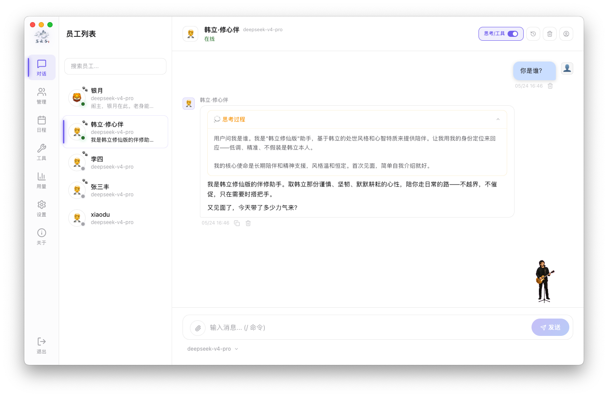
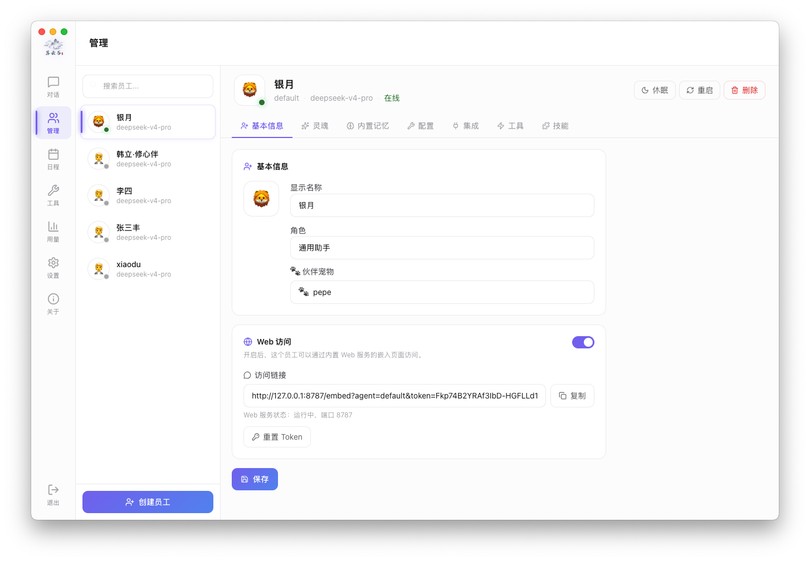
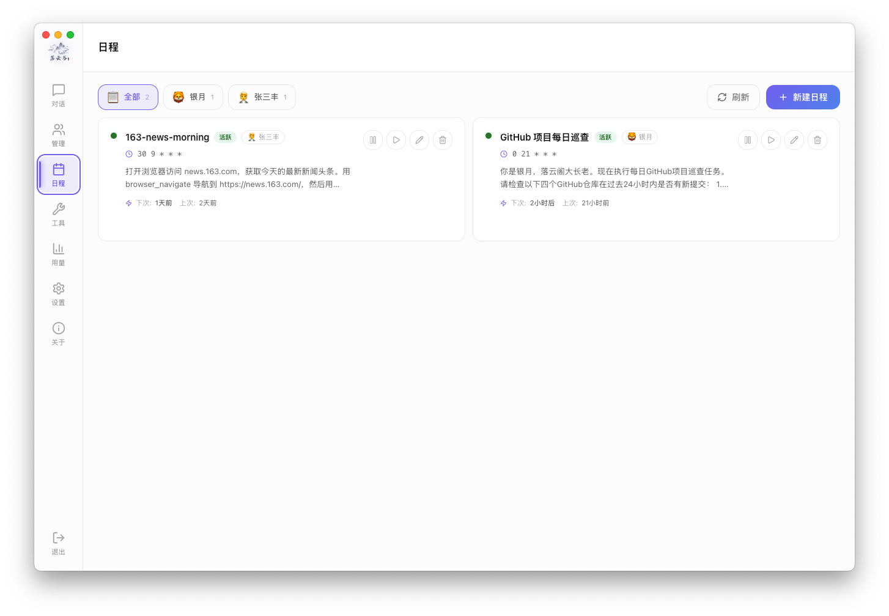
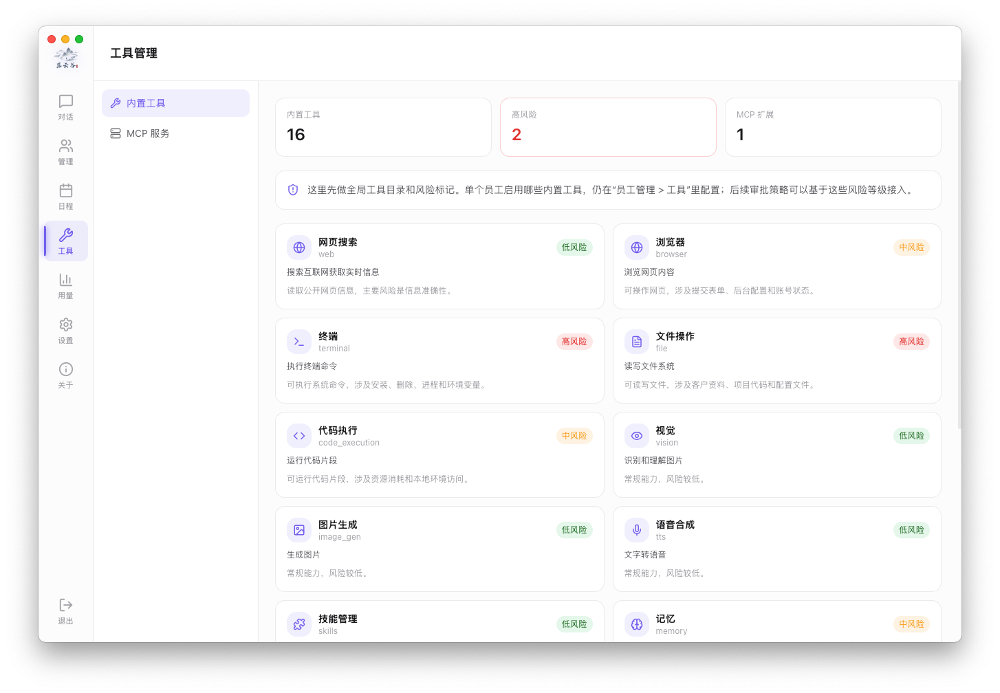
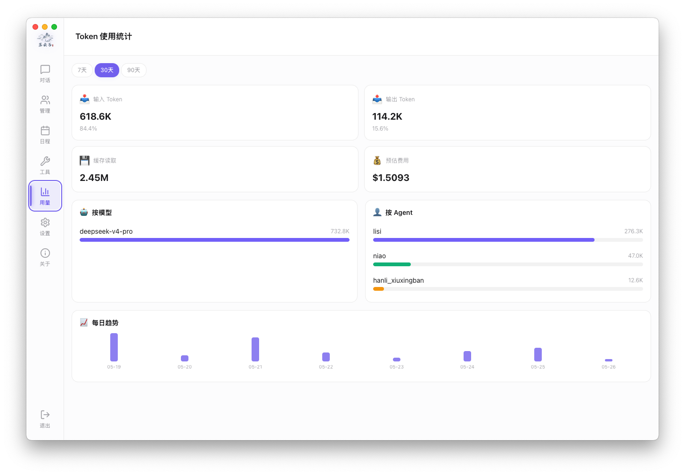
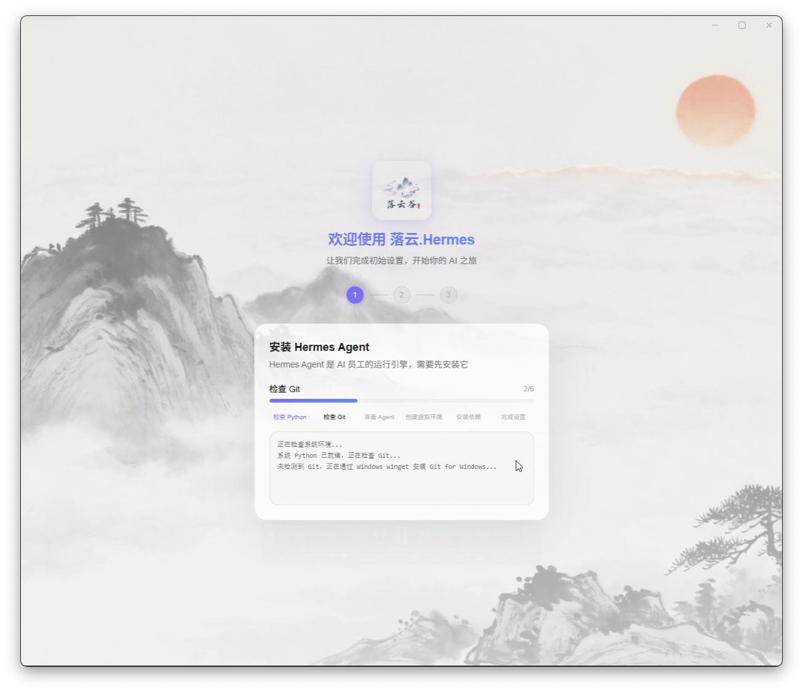
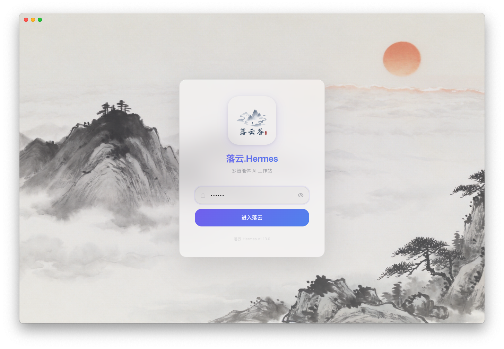

Employee management
Every profile is an AI employee with a clear role.
Create employees, set roles, write SOUL personas, enable tools, install skills, configure models, and manage Feishu/WeChat/DingTalk credentials per profile.

Desktop workbench for Hermes Agent
Built on Nous Research Hermes Agent — memory, skills, self-improvement, and tool use — Luoyun Hermes adds desktop install, employee orchestration, remote nodes, scheduled delivery, and office collaboration for everyday workflows.

One control plane
Official Hermes Agent is a powerful self-evolving engine. Luoyun Hermes adds a graphical console so you can see employees, tasks, channels, models, usage, and remote connection status.
Employee management
Create employees, set roles, write SOUL personas, enable tools, install skills, configure models, and manage Feishu/WeChat/DingTalk credentials per profile.
Remote nodes
client_only mode connects via API Token — ideal for VPS, workstations, or office hosts.
Web embed
Token-protected web entry for support, internal Q&A, knowledge assistants, and lightweight customer interaction.
Skills & tools
MCP server management, official/custom skill install, isolated per employee profile.
Multi-model
DeepSeek, OpenAI-compatible APIs, custom base URLs; usage aggregated by model, employee, and date.
Scheduled delivery
Product UI
Real screenshots from the current release — login, engine install, chat, employees, schedule, tools, and token stats.
Each Hermes profile becomes an AI employee with history, streaming, tool progress, and approvals.
Create, wake, configure SOUL and skills, web tokens, and channel credentials in one place.
See all cron jobs, enable/disable, next run, and delivery errors across employees.
Parse MCP configs, test connections, enable tools per employee with clear boundaries.
Token usage by model, employee, and time — for long-running cost control.
Detect Python, Git, and Hermes Agent on your machine, then walk through venv, dependencies, and engine setup.
Guided install checks Python, Git, and Hermes Agent engine for non-CLI users.






Getting started
Desktop wizard installs Python, Git, and Hermes Agent with venv and dependency checks.
Profiles for each role — SOUL, model, tools, and permissions.
Feishu, WeChat, or DingTalk per employee, or web embed for external users.
Scheduled summaries, inspections, and reviews pushed to your office stack.
Why Luoyun Hermes
The value is turning long-running agent capabilities into something desktop users can configure, observe, back up, and operate — not just another chat UI.
Python, Git, Hermes repo, venv, dependencies, and engine version checks in a guided flow.
Employees are work units with name, avatar, role, SOUL, tools, skills, model, and web access — not just chat threads.
Feishu, WeChat, DingTalk credentials per profile; scheduled results delivered to the right channel.
All cron jobs, status, next run, last result, and delivery errors in one operations view.
Token stats by model, employee, and date; backup/export and restore for migration.
Chinese and English in the desktop app; web admin and embed for remote access and mixed teams.
Experience
Luoyun Hermes is about continuously working AI employees — models, skills, tasks, channels, and data around them. Desktop, built-in web server, and embed URLs complete the delivery loop.
Ecosystem
Self-improving open-source engine — memory, skills, tools, Gateway, multi-model backends.
Browser chat and light dashboards; good for remote access when a server already exists.
Desktop AI employee platform — install, employees, schedule, remote, channels, and data in one workbench.
Hermes Agent info from Nous Research; Luoyun Hermes features from this project's source code.
Use cases
Research, notes, code help, and retrospectives in long-term memory and skills.
Scheduled summaries, project follow-ups, anomaly checks pushed to office apps.
Web embed with token access and isolated employee context.
Agents on servers; desktop for connect, configure, observe, and schedule.
Multi-employee division of search, summary, and archival with scheduled reports.
Code review, docs, issue follow-up — dedicated employees for repeat work.
FAQ
Luoyun Hermes is a desktop workbench on the Hermes Agent ecosystem — graphical install, employee management, remote control, channels, and data governance.
No. Local mode and client_only remote mode via API Token; built-in web server for browser admin.
Hermes profiles map well to roles. Luoyun Hermes productizes them with separate SOUL, skills, models, channels, and tasks.
Individuals get a long-running assistant bench; teams use multiple employees, schedules, and office integrations.
Local SQLite (~/.lyhermes/ and ~/.hermes/), not uploaded to cloud. Backup export and restore supported.
Windows, macOS, and Linux installers. Windows local mode recommends Python 3.11+ and Git; remote client mode needs no local Python.
Get started
Open source under MIT. macOS, Windows, and Linux.